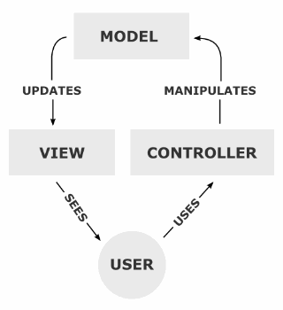

Proyecto de Software
Cursada 2014
Hoy seguimos con ...
Temario
- Repaso Clase Anterior
- Objetos
- BBDD
- PHP
- BBDD problemas
- MVC
- Templates con Twig
Repaso - POO en PHP
- PHP tiene soporte para construir clases.
- Es posible definir clases en una jerarquía con herencia simple.
- El constructor es class

Repaso Clases
- Clase Archivo:
class Archivo{
// variables de instancia
// métodos
}- Clase Archivo gráfico que hereda de Archivo:
class ArchivoGrafico extends Archivo{
}Consultas usando mysqli
<?php $db_host="127.0.0.1"; $db_user="user"; $db_pass="pass"; $db_base="base"; $link = new mysqli($db_host,$db_user,$db_pass,$db_base); $query = "SELECT * FROM usuarios”; $result = $link->query($query) ?>
Usando PDO
<?php $db_host="127.0.0.1"; $db_user="user"; $db_pass="pass"; $db_base="base"; $cn = new PDO("mysql:dbname=$db_base;host=$db_host",$db_user,$db_pass); $query = "SELECT * FROM usuarios”; $result=$cn->query($query); ?>
Pero y ¿si quiero interactuar con un formulario web?
$_GET, $_POST, $_COOKIE y $_REQUEST
Consultas usando mysqli
<?php $db_host="127.0.0.1"; $db_user="user"; $db_pass="pass"; $db_base="base"; $link = new mysqli($db_host,$db_user,$db_pass,$db_base); $query = "SELECT * FROM usuarios where nombre='".$_POST["email"]."' and pass='".$_POST["pass"]."';"; $result = $link->query($query); ?>
Usando PDO
<?php $db_host="127.0.0.1"; $db_user="user"; $db_pass="pass"; $db_base="base"; $cn = new PDO("mysql:dbname=$db_base;host=$db_host",$db_user,$db_pass); $query = "SELECT * FROM usuarios where nombre='".$_POST["email"]."' and pass='".$_POST["pass"]."';"; $result=$cn->query($query); ?>
Diferencias desde el HTML
Ver: login-mysqli-html y login-pdo-html
Diferencias desde el PHP
Ver fuente de: login-mysqli-php y login-pdo-php
Inyección
- Una SQL Injection suele ocurrir cuando se arma en forma descuidada una consulta a la base de datos a partir de los datos ingresados por el usuario.
- Dentro de estos parámetros pueden venir el código malicioso.
SQL Inyección
Obtener acceso a una aplicación:
- Suponiendo que la consulta de autenticación de una pagina que pide id y pass es:
select * from users where id='”. **$id** .”' and pass='”. **$pass** .” ' ;
- Suponiendo $id='admin' y $pass='admin' el sql quedaría:
select * from users where **id='admin'** and **pass='admin'**;
SQL Inyección
- ¿Qué sucede si usamos $id=$pass= 1' or '1=1?
select * from users where id='”. **“1' or '1=1”** .”' and pass='”. **“1' or '1=1”** .”'”;
- Lo que se se resuelve en:
select * from users where **id='1' or '1=1'** and **pass='1' or '1=1'** ;
- (Cualquier cosa OR True) es siempre TRUE
SQL Inyección
Para obtener acceso a una aplicación WEB, dependiendo del motor de base de datos, otras estructuras que se pueden usar son:
- ' or 1=1--
- " or 1=1--
- or 1=1--
- ' or 'a'='a
- " or "a"="a
- ') or ('a'='a
SQL Inyección
Para razonar..... ¿Qué pasa si en vez de pepe envio ' or 1=1 como parámetro?
Ver: login-mysqli-html y login-pdo-html
SQL Inyección
- Para razonar..... ¿Qué pasa si en vez de ' or 1=1 como parámetro me las rebusco un poco más?
- Intentemos... SELECT * FROM usuarios where nombre=''or'1=1' and pass='';update usuarios set dni='234' where '1=1';
- Ver: login-mysqli-html (no debería funcionar)
- Ver: login-pdo-html (sí debería funcionar)
Prepared Statement
- Pueden definirse como un tipo de plantillas compiladas para SQL que las aplicaciones quieren ejecutar, pueden ser personalizadas usando parámetros de variables.
- Ventajas:
- PERFORMANCE: La consulta sólo necesita ser analizada (o preparada) una vez, pero puede ser ejecutada múltiples veces con los mismos o diferentes parámetros. Usándolas una sentencia preparada, la aplicación evita repetir el ciclo de análisis/ compilación/ optimización. Esto significa que las sentencias preparadas usan menos recursos y se ejecutan más rápidamente.
- SEGURIDAD: Los parámetros para las sentencias preparadas no necesitan estar entrecomillados; el controlador automáticamente se encarga de esto. Si una aplicación usa exclusivamente sentencias preparadas, el desarrollador puede estar seguro de que no ocurrirán inyecciones SQL.
Evitando SQLi usando mysqli
<?php $db_host="127.0.0.1"; $db_user="user"; $db_pass="pass"; $db_base="base"; $link = new mysqli($db_host,$db_user,$db_pass,$db_base); $query = "SELECT * FROM usuarios where nombre=? and pass=?"; $result = $link->prepare($query); $result->bind_param("ss",$_POST["email"],$_POST["pass"]); $result->execute(); ?>
Ver DEMO
- Ver: login-mysqli-ps-html y fuente de login-mysqli-ps-php
Evitando SQLi usando PDO
<?php $db_host="127.0.0.1"; $db_user="user"; $db_pass="pass"; $db_base="base"; $cn = new PDO("mysql:dbname=$db_base;host=$db_host",$db_user,$db_pass); $query = $cn->prepare("SELECT * FROM usuarios where nombre=? and pass=?"); $query->execute(array($_POST["email"],$_POST["pass"])); ?>
Ver DEMO
- Ver: login-pdo-ps-html y fuente de login-pdo-ps-php
Insertar datos con PDO
<?php $sentencia = $gbd->prepare("INSERT INTO REGISTRY (name, value) VALUES (:name, :value)"); $sentencia->bindParam(':name', $nombre); $sentencia->bindParam(':value', $valor); // insertar una fila $nombre = 'uno'; $value = 1; $sentencia->execute(); // insertar otra fila con diferentes valores $nombre = 'dos'; $valor = 2; $stmt->execute(); ?>

Patrón MVC
Model – View - Controller
Model – View - Controller
- Tres componentes:
- Modelo
- Vista
- Control
- El principio más importante de la arquitectura MVC es la separación del código del programa en tres capas, dependiendo de su naturaleza.
- La lógica relacionada con los datos se incluye en el modelo, el código de la presentación en la vista y la lógica de la aplicación en el controlador.
MVC
- Reduce la complejidad, facilita la reutilización y acelera el proceso de comunicación entre capas.
Aplicación Típica SIN MVC
- Aplicación típica que no sigue MVC tiene todo el código en el mismo lugar.
- Ver Ejemplo cliente_servidor_sin_MVC
MVC – Separando la Vista

MVC – Separando la Vista
- Ver: codigos fuente de La-vista y Separando-la-vista
MVC – Separando el modelo

MVC – Separando el modelo
- Ver: codigos fuente de El-modelo y MVC-completo
Variaciones del MVC original
- MVC en symfony
- Model View Presenter
- Model View Adapter
MVC –El caso de Symfony 1.4
MVC –El caso de Symfony 1.4
Model View Presenter
Model View Presenter
Model View Adapter
Referencias
- PHP -> http://php.net
- PhpMyAdmin -> http://www.phpmyadmin.net
- Lenguaje SQL -> http://www.w3schools.com/sql/default.asp
- PDO -> http://www.php.net/manual/es/class.pdostatement.php
- Mysqli -> http://php.net/manual/es/mysqli.prepare.php
- MySQL -> http://dev.mysql.com/doc/
- MVC -> http://es.wikipedia.org/wiki/Modelo_Vista_Controlador#Frameworks_MVC
- Symfony y el MVC -> http://librosweb.es/symfony_1_4/capitulo_2/el_patron_mvc.html
- Prepared Statement -> http://en.wikipedia.org/wiki/Prepared_statement
La Vista
Programando con Templates – Alternativas para el View
Templates en PHP
- El uso de templates o plantillas permite separar la aplicación de la presentación, pero ....
No asegura MVC. Esa es NUESTRA responsabilidad
- Algunas opciones:
- Smarty, http://smarty.php.net
- PEAR::HTML_Templates_IT, http://pear.php.net
- Dwoo, http://dwoo.org/
- Twig, http://twig.sensiolabs.org/
- Savant, http://www.phpsavant.com/
- Blade, http://laravel.com/docs/templates
Twig
- Twig es un motor de templates en PHP promocionado como un motor de plantilla flexible, rápido, y seguro.
- Desarrollado y distribuido bajo licencia BSD. Documentación bajo licencia Creative Commons.
- ¿Por qué lo elegimos en la cátedra?
- Porque es la alternativa que apoya Fabien Potencier, el creador del framework Symfony. Y es la opción por defecto en Symfony 2.
- Muchos Frameworks como Laravel o Yii lo pueden utilizar
- Cuestiones de seguridad embebidas
- Es muy similar a otros motores con lo cual el traspaso es inmediato
Instalando Twig
Templates en PHP
- Las librerías que permiten trabajar con templates definen una serie de clases a importar en nuestros scripts PHP.
<?php require_once("Twig/Autoloader.php"); $loader = new Twig_Loader_Filesystem($dir); $twig = new Twig_Environment($loader); $template = $twig->loadTemplate("prueba.tpl"); ….. completar lo que se deba completar ... $template->display(); ?>
- Luego hay que definir el archivo .tpl que tiene una sintaxis particular.
Templates con Twig
- Antes que nada, debemos cargar la librería. ¿Qué es la “autocarga” de clases?
<?php ..... Twig...... require_once("Twig/Autoloader.php"); ?>
Templates con Twig
- Twig utiliza un objeto (instancia de la clase Twig_Environment) utilizado para almacenar distintas opciones de configuración y utilizado para cargar los templates. En este caso, $dir contiene el nombre del directorio donde se encuentran los templates.
<?php $loader = new Twig_Loader_Filesystem($dir); $twig = new Twig_Environment($loader); ….. completar lo que se deba completar ... ?>
Templates con Twig
- Por último, cargamos el template y lo mostramos.
<?php ..... Twig...... $template = $twig->loadTemplate("prueba.tpl"); ….. completar lo que se deba completar ... $template->display(); ?>
Los Templates de Twig
- Los templates se utilizan para definir la vista.
- Tienen un formato especial.
- No utiliza una extensión en particular (podría ser html, xml, twig, tpl, etc.).
- Son procesados por el sistema de plantillas.
- Contienen variables o expresiones que son reemplazadas cuando se procesa el template y tags que proveen la lógica de la presentación.
Formato
- Todas las etiquetas del template se encierran entre dos tipos de delimitadores
{{ ... }}
{% ... %}- Todo el contenido fuera de los delimitadores se muestra como contenido estático.
Variables
- Las variables pueden ser variables simples, arreglos u objetos definidos en la aplicación.
{{ variable }}
{{variable.atributo}}
{{variable[2]}}
{{variable[“atributo”]}}- También es posible darle valores dentro del template:
{% set var = 'algo' %}
{% set var = [1, 2] %}
{% set var = {'valor': 'algo'} %}Variables
Filtros
- Las variables pueden ser modificadas utilizando filtros.
{{ '1234'|reverse }}- Algunos filtros: date, format, replace, url_encode, capitalize json_encode, upper, lower, join, sort, number_format, trim, etc.
- Ver: http://twig.sensiolabs.org/doc/filters/index.html
Funciones
- Existen funciones predefinidas que pueden invocarse en los templates
<pre>
{{ dump() }}
</pre>- Algunos funciones: range, cycle, attribute, date, random, etc
- Ver http://twig.sensiolabs.org/doc/functions/index.html
Estructuras de Control
- Siempre aparecen en bloques {% ... %}
- Es posible incluir bloques if/elseif/else y for
- Más etiquetas en: http://twig.sensiolabs.org/doc/tags/index.html
Algunas cosas más
- Se pueden incluir comentarios:
{# ... #}- Se pueden incluir otros templates
{% include 'sidebar.html' %}- Twig define una mecanismo de herencia de templates.
- Permite definir un template base que contiene los elementos comunes y luego definir los bloques que los “templates hijos” redefinirán.
Algunas cosas más
Un poco más sobre el ambiente
- Algunas opciones en el momento de crear el ambiente para cargar los templates:
- cache: se evita volver a parsear los templates.
<?php $twig = new Twig_Environment($loader), array("cache" => $templateDirCompi, )); ?>
Si algo falla...
- Twig puede levantar las siguientes excepciones:
- Twig_Error: La excepción base para todos los errores.
- Twig_Error_Syntax: Cuando hay algún problema con la sintaxis del template.
- Twig_Error_Runtime: Cuando hay un error en tiempo de ejecución (por ejemplo, cuando se utiliza un filtro que no existe para una instancia dada).
- Twig_Error_Loader: Se produce un error durante la carga del template
Referencias
- Twig http://twig.sensiolabs.org
- The Twig Book http://twig.sensiolabs.org/pdf/Twig.pdf
- Symfony http://symfony.com/doc/current/book/templating.html
- Una intro en español: http://gitnacho.github.com/symfony-docs-es/quick_tour/the_view.html